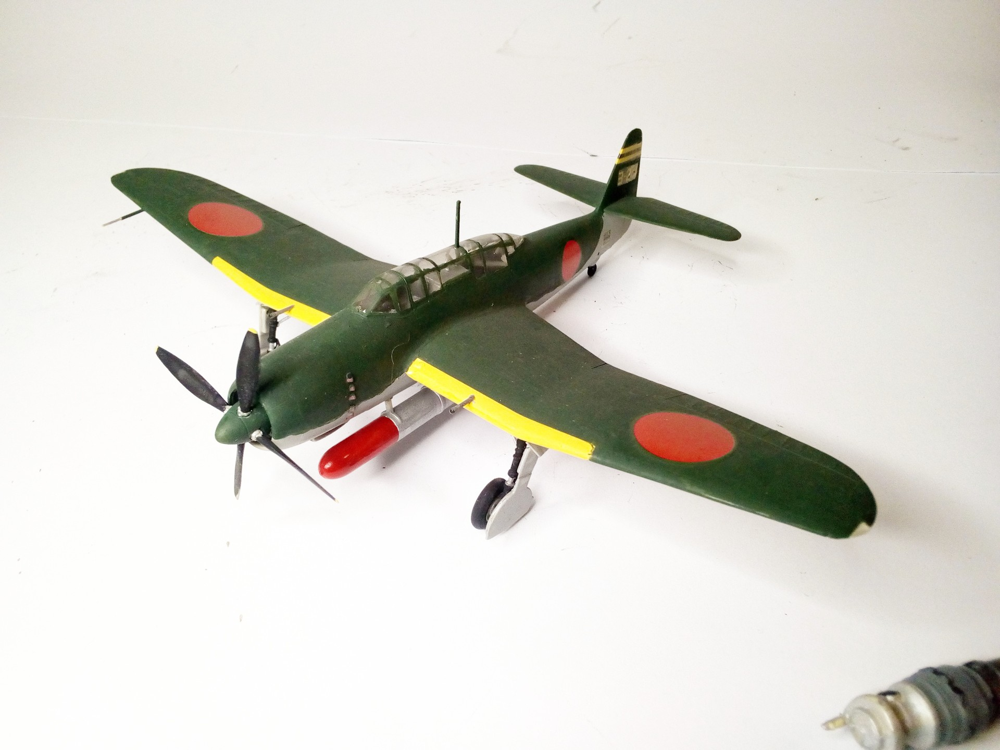

Aerei · scale model archive
Nakajima Saiun C6N1
Nakajima Saiun C6N1 — Kit: Fujimi, Scale: 1:/2. 302 Kokutai 3 Hikotai Lt Yasuzo Nagame August 1945 Atsugi AB #1/72 #Fujimi

Photo gallery
English description
302 Kokutai 3 Hikotai Lt Yasuzo Nagame August 1945 Atsugi AB
#1/72 #Fujimi
Descrizione italiana
302 Kokutai 3 Hikotai Lt Yasuzo Nagame agosto 1945 Atsugi AB.